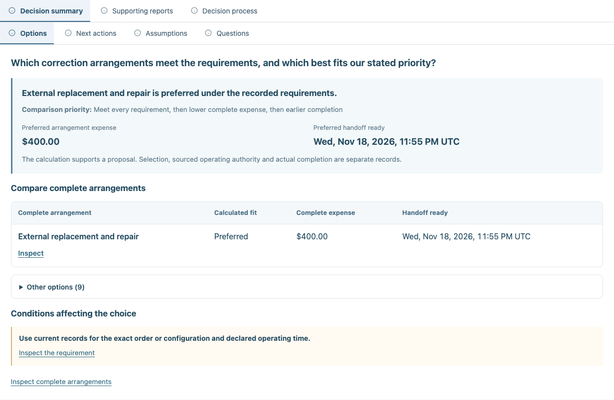
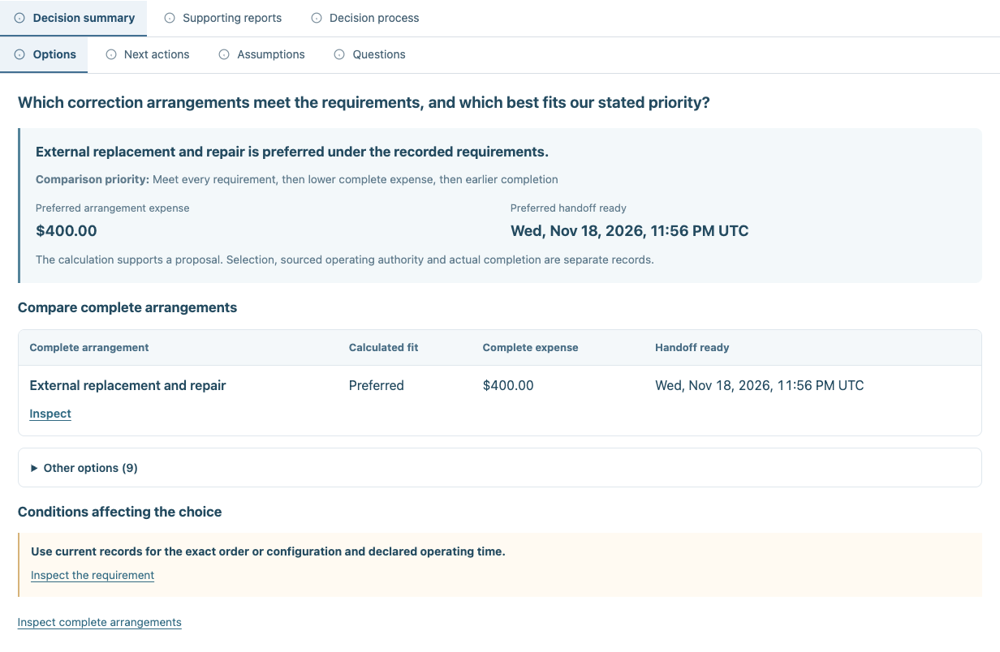

The campaign queue has flagged GIFT-321. Jordan needs to inspect its sources, update a premise and give Leah a current proposal. Re-entering the case in another tool risks separating the answer from the information that supported it.
The developer could write custom checks or reuse a team-owned calculation module. Either approach needs an explicit contract for inputs, dependent results, reports and retained history. The SDK is useful here because the existing CLI workflow already supplies that contract and the authored gift-kit assessments. The custom desk can continue their native case.
Open the retained case, with its meaning intact.
The React client creates Decision Lab with createDecisionLab from @decision-lab/sdk and createBrowserExecutor from @decision-lab/sdk/browser. The worker runs the assessments and prepares their complete reports. React owns the desk’s forms and lifecycle.
Public lab.workflows.openRun opens the native file:
const run = lab.workflows.openRun(value);The sample’s openReviewJourney helper additionally checks the expected definition and app release, campaign identity and retained original case. Those compatibility checks are application code, rather than an implication of a readable file format.


The import preserves the CLI’s exact native content hash, source references, original promise and current calculated findings. Opening the case creates no operating choice or authority.
Apply a premise. Recalculate what depends on it.
A form draft is separate from the applied case. When Jordan applies the intended change, the sample passes the supplied answer through the SDK:
if (!equal(next.answers[questionId].value, value)) next = lab.workflows.answer({ run: next, questionId,
value, status: isCalculationJourney(next) ? WORKFLOW_ANSWER_STATUS.SUPPLIED : WORKFLOW_ANSWER_STATUS.AWAITING_REVIEW, at: atTime(at) });The surrounding equal, isCalculationJourney and atTime functions belong to the sample. lab.workflows.answer is the public SDK operation. A changed answer makes its dependent findings stale; the desk retains the earlier result as history and withholds a current proposal until recalculation.
The desk’s Calculate or Recalculate control invokes the authored dependency chain:
return lab.workflows.solve({ run: current, ...(execution ? { execution } : {}), createdAt: atTime(at) });The evidence assessment establishes which faults the supplied observations support. The planning assessment uses that basis to evaluate complete correction arrangements. The SDK orders those calculations and reuses complete current results whose premises remain unchanged. The developer does not reproduce those rules in React conditions.
The assessment pattern remains the same across clients. Domain configuration supplies the fault meanings, correction requirements and cost-first policy. Missing information, an incomplete calculation and a completed finding with no feasible package retain different meanings.
Present the output through the shared report host.
Public lab.workflows.output({ run }) materializes the current workflow output. The sample passes that output and its authored definition to the shared component:
return <WorkflowReportsView output={output} definition={definition} pending={dirty}
blockedReason={blockedReason} readOnly />;WorkflowReportsView, from @decision-lab/react-views, supplies the same Decision summary, Supporting reports and Decision process navigation used by Marketplace workflows. The sample’s dirty flag identifies unapplied form edits; the component presents that state rather than treating an old finding as current.


Leah can read the current proposal, compare complete packages and inspect a specific alternative’s supporting checks. Inspection changes what she reads; it chooses no work. Authored configuration supplies the gift-kit labels and formatting. The SDK and app calculate the findings; the report component presents them.
Keep the next handoff attached to this case.
The desk serializes the last applied native workflow with lab.sources.renderJSON. A saved continuation retains its sources, calculations and history; unapplied form edits remain drafts. The sample supplies local storage and reopening, while a company deployment chooses its own storage and access controls.
Jordan has updated one premise and obtained a current proposal without rebuilding the review or losing its earlier basis. Leah can act on the supported finding and investigate its conditions. The final integration article considers the separate problem of preserving the decision and subsequent operating records. The full Handoff Desk source contains the forms and integration around these selected SDK calls.